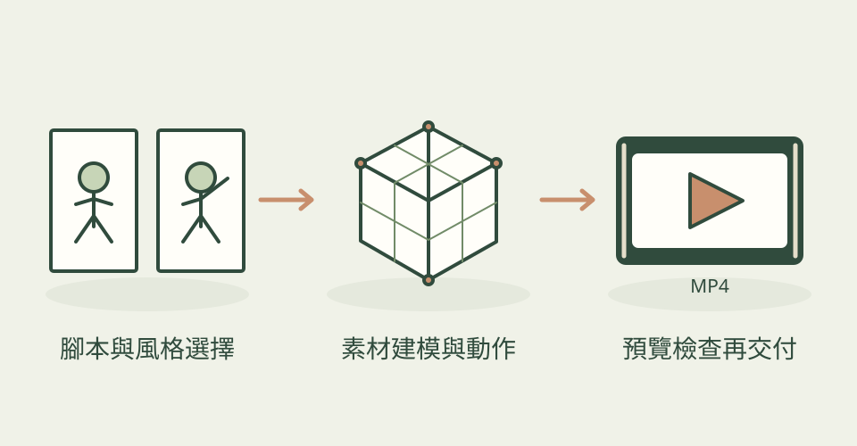

想用一段動畫說清楚水車如何帶動磨盤，卻不知道先寫腳本、找模型還是做動作？Creator Generalist 是一套給 AI 助手閱讀的製作指南，依需求切換 3D、2D 解說或遊戲流程，再調用建模、骨架、角色動畫、剪輯與聲音等技能。它是製作流程合集，需要助手操作實際軟體。
它怎麼幫忙
先寫需求與參考，再安排腳本和節奏；準備素材、工具與幾種風格畫面，讓你選方向後才製作。3D 路線使用授權模型與材質，檢查腳底接地、手部接觸與動作滑步，再交有聲 540p 預覽；確認後才做完整品質。2D 路線能安排地圖、照片和按真實比例排的時間軸。遊戲路線先讓你玩可勝敗、可重開的灰模核心，再決定美術方向；自動檢查能確認運作，不能替你判斷好不好玩。
三步驟看懂這個技能

先選方向，再製作、檢查與預覽；本站功能示意，非作者成果或技能實測。
功能示意・本站繪製 放大查看可以這樣開口
這是一個可依需求修改的委託範例。
做一段 30 秒水車剖面解說：先用三張風格畫面比較木構造與光線，讓水輪、齒輪、磨盤依序啟動，鏡頭保持看得懂傳動關係。先交低解析預覽與素材來源，修正穿模、浮空和字幕時序後，再輸出正式影片。
適合什麼工作
適合做科普短片、歷史地圖解說、微縮場景的創作者，以及願意先試玩再補美術的獨立遊戲開發者。也適合已有 Blender 或網頁 3D 基礎、想把 AI 工作步驟整理清楚的人。
開始之前
- 準備工具
- 需可讀檔、執行程式並查看預覽的 AI 助手。依路線使用 Blender、Three.js／67js、Python、Node.js、FFmpeg；2D 可選 Fusion、Remotion、Krita 等，遊戲可選網頁、Godot、Unity 或 Unreal。不必一次裝齊全部工具，各路線需先確認本機版本與環境。
- 使用成本
- 合集採 MIT。可選 Blender、FFmpeg 與免費素材走本機製作，仍有 AI 助手額度、渲染時間及硬體成本。HumanGen、特定素材、商用軟體、ElevenLabs 等選用服務可能另收費；素材來源有 CC0、CC BY 或各平台條款，需逐件保留來源，不能把合集 MIT 視為所有下載素材的授權。
- 交付內容
- 依路線交付影片、可修改專案、GLB 資產、素材出處、檢查報告；遊戲路線交付本機可玩版本與實際遊玩錄影。並非每種工具或輸出都由本站實測。
- 先留意
- 2026-11-13 首次收錄，不是今天發布；儲存庫建立於 11 月 6 日，本次觀察 156 星，屬小眾候選。作者示例展示水車動畫，不能據此保證所有題材或引擎都能達到同樣效果。本站只核對 README、三個主技能與授權，沒有執行候選程式、安裝技能或呼叫付費服務。
最近的觀察
2026-11-15：更新 Blender 5.x 與 Three.js r187 製作指引，並修正影片輸出的音訊與影格率範例。FFmpeg 響度整理明確指定 48 kHz；通用輸出範例保留來源影格率，只有平台需要時再轉 30 fps。例如把 24 fps 的 3D 短片交付社群時，不應因複製範例就不必要轉幀。另整理技能閱讀地圖、先讀本機筆記，並把原 67js 名稱改為 Crucible；改名本身不是新引擎能力。適合做 2D／3D 解說與短片的人，仍需相應創作軟體與 FFmpeg；未新增必要付費生成。本站核對文件差異，未測試候選程式。 2026-11-17：新增 paint-with-code，以獨立 paintkit 的模擬畫筆與紙面，把有權使用的照片或畫作重畫成水彩，也可錄製逐筆上色影片。glazing 模式以 40 層罩染保留亮部、加深暗部；作者列 2048 px 單核約五分鐘，只是參考時間。需 Python／uv 與 paintkit，影片需 FFmpeg，這條路線不需生圖 API。例：將自己拍的花束照片重畫成水彩賀卡並附繪製過程；先低解析預覽、檢查小尺寸辨識度。3D 視覺化技能移入 3d-generalist；既有水車配圖不是本次水彩成果。 2026-11-18：model-characters 的低多邊形路線補上服裝與軟道具製作規則：用真實尺寸和照片量截面、沿衣長排 UV、合併條帶接縫，檢查領片與身體間距，並避免一像素條紋造成旋轉時閃爍。例如做低多邊形 Polo 衫，能依尺寸放好門襟和標誌並檢查領子有沒有埋進胸口。這是實務指南擴充，不是新增自動製衣工具；仍需 Blender／建模程式與人工預覽，無新增必要付費生成。水車配圖不是這次服裝成果。 2026-11-20：design-sound 0.4.0 新增電影預告音效指引與 reference_gap.py：比較自己的混音和參考音軌的頻段比例、撞擊音量及撞擊前後落差；另檢查過於平坦的環境底噪。例如怪獸遊戲預告的爆炸聽來無力，可先判斷是低頻、碎片層不足，還是前段太滿，再調整。需要 Python、NumPy、SciPy、soundfile，完整剪混另用 FFmpeg；本機量測不需付費生成，素材與可選雲端生成另計。數字不等於試聽，參考片與音樂仍需各自授權；本文未轉載電影素材。 2026-11-23：design-sound 0.6.2 可由合法錄音學出可調參數的聲音、疊撞擊音，並做 UI 音效套件與動畫時間同步；聲音生成服務改為點名才用。另把 GLB 切成可旋轉像素堆疊的流程加入 make-pixel-splats。例如給作品集按鈕做同一組柔和提示音，再替車模輸出旋轉像素道具。聲音路線需 Python 3.12、NumPy／SciPy 等，像素路線需 Node、Crucible、Chrome，影片另需 FFmpeg；本機路線無必付生成 API，原始音源仍需個別授權，量測不能代替試聽。 2026-11-24：visualize-in-3d 改以 Crucible 繪製互動應用、影片和靜態圖，補上平滑鏡頭、像素處理、畫面越界與共面檢查；watch-video 增加分區比較參考圖與渲染的亮度、顏色和輪廓探針。例如用可拆解的引擎模型解說氣流，再檢查鏡頭是否突兀。需 Node 20+、Playwright／Chromium、Crucible，影片需 FFmpeg，精細模型建議 Blender；影像比對另需 Python／NumPy／Pillow／SciPy。模型素材仍須逐項授權，選用雲端生成另計費。
作者與來源
本文依作者公開說明整理，沒有實際執行這個專案。功能插圖由本站繪製，原作者範例另行標示；並非本站執行技能的測試結果。GitHub 星數為專案總量，觀察時間為 2026年11月24日 13:32（台北時間）。
與前次快照相比增加 5 星；這不是 GitHub Trending 排名。